Natural events & the geographies of knowledge
A developing comparative project on how geographically dispersed observations of extraordinary natural phenomena were connected, interpreted, and authorised across Europe, c. 1750–1870.
I’m Deguang Li, a PhD researcher in History at the University of Cambridge. I study how people observed, communicated, contested, and made sense of the natural world in eighteenth- and nineteenth-century Europe.
Researching knowledge in motion—between people, places, institutions, and media.
I am a third-year PhD researcher in History at Newnham College, University of Cambridge, and a cultural historian of knowledge and science. My work explores how societies make sense of the natural world through historically situated practices of observation, communication, and representation.
My research focuses on eighteenth- and nineteenth-century Europe, particularly Britain and France, with interests in print culture, material practices, intellectual history, and transnational exchange. My training in intellectual history and comparative literature informs my approach to the relationships between knowledge, society, and politics.
I hold an MPhil in Intellectual History and a BA in Comparative Literature from Tsinghua University and studied at Sciences Po Paris as an exchange student.
Read my academic CV ↗Select a category and a city to explore my education, archival research and conference travel.
Current supervisor: Alexandra Walsham ↗
Continuing supervisor: Emma Spary ↗
Advisor: Joshua Nall ↗
MPhil supervisor: Gang Peng ↗
“Re-enchantment: The Making of Cometary Knowledge in London and Paris, 1811–1812”
“(Dis-)Ordering the Heavens, Ordering the Polity: Cometary Knowledge and Political Culture in Napoleonic France”
“Mapping the Heavens in the City: Cometary Knowledge and Urban Geographies in London and Paris, 1811–1812”
“Before Newnham: The Transnational Craft, Local Practice, and Women’s Scientific Engagement of a Nineteenth-Century Telescope”
“Re-enchantment of the Comet in Paris and London, 1811–1812: On the Uncertainty of Enlightenment”
“Re-enchantment of the Comet in Paris and London, 1811–1812”
“Répétition: Contextualising Antigone in Mai ’68”
“Re-enchantment of the Comet in Paris and London, 1811–1812”
“From Telescopes to Teapots: The Role of Material Culture in Shaping Responses to the Great Comet of 1811”
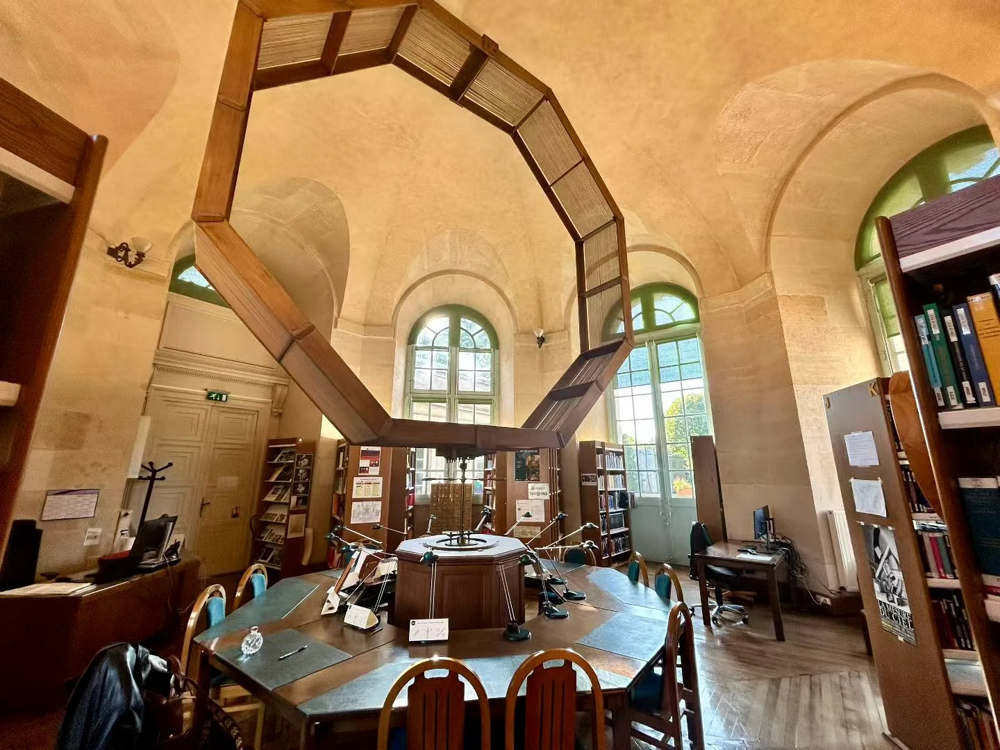
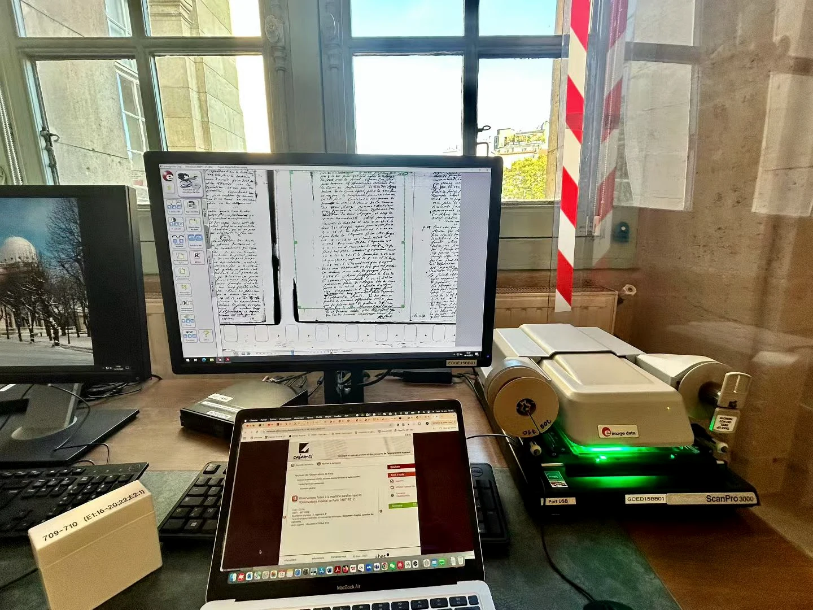
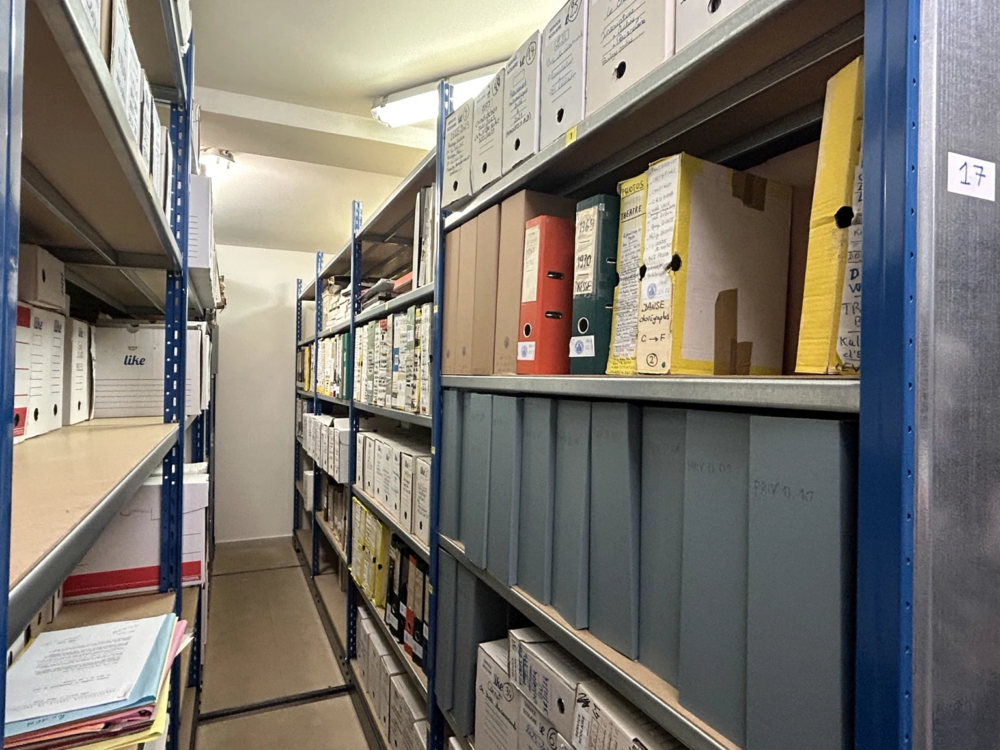
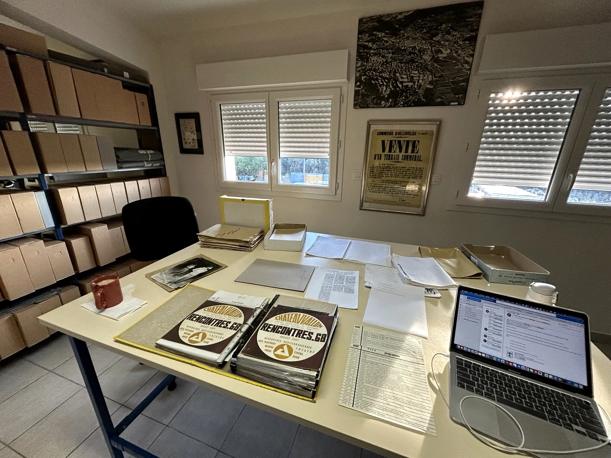
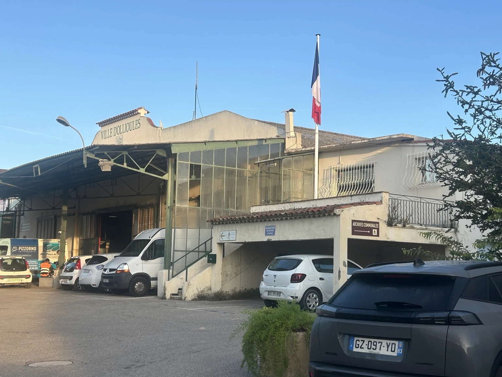
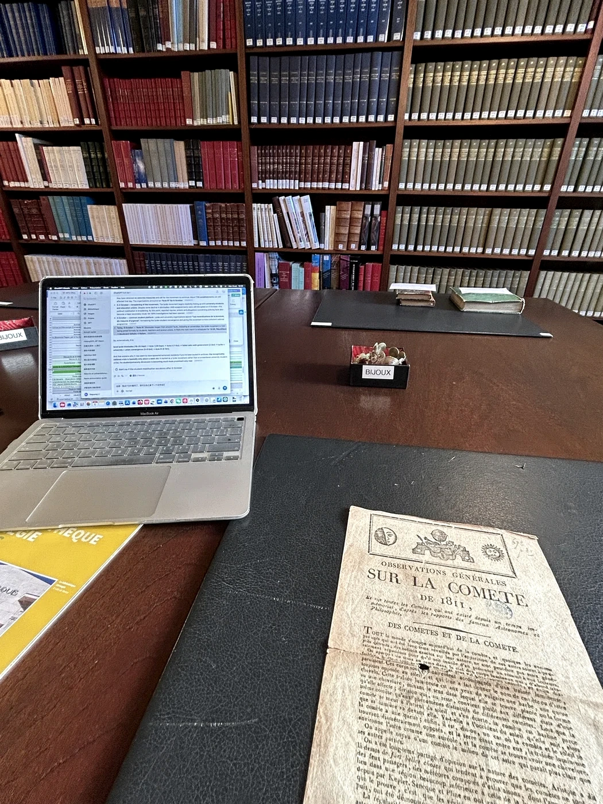
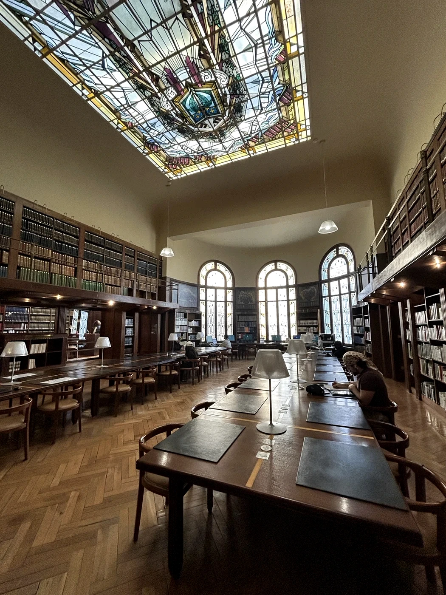
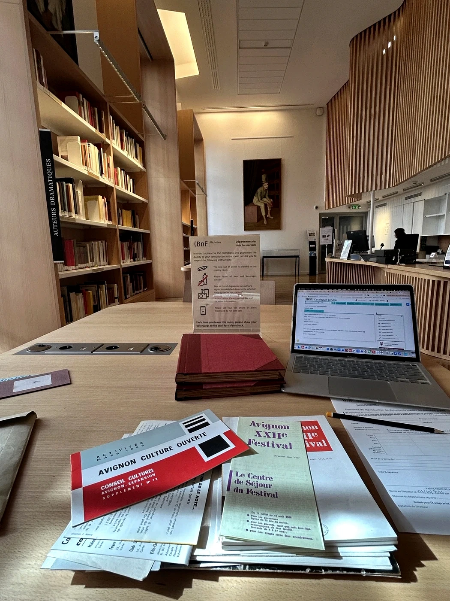
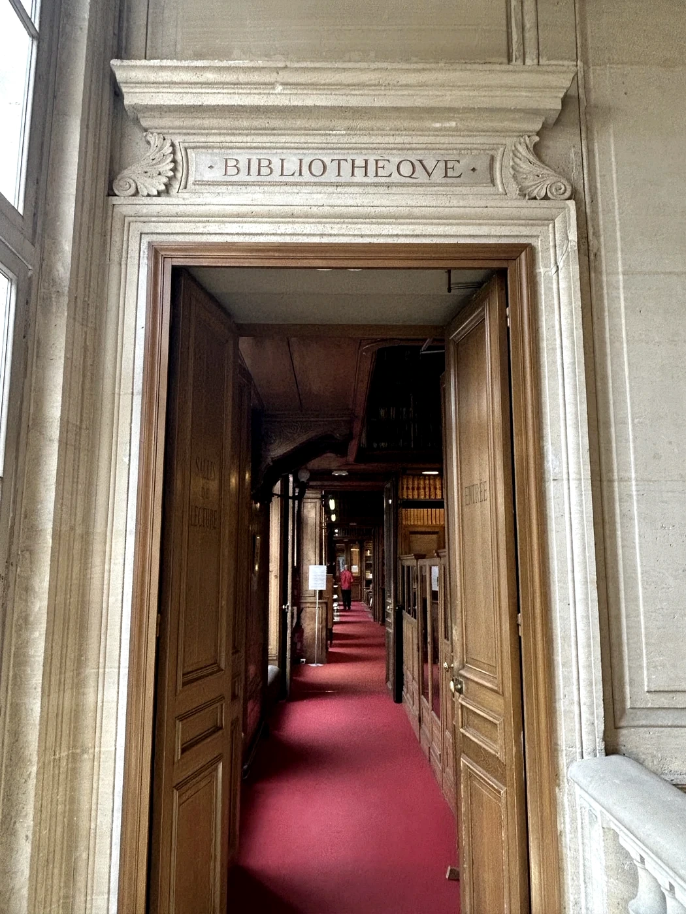
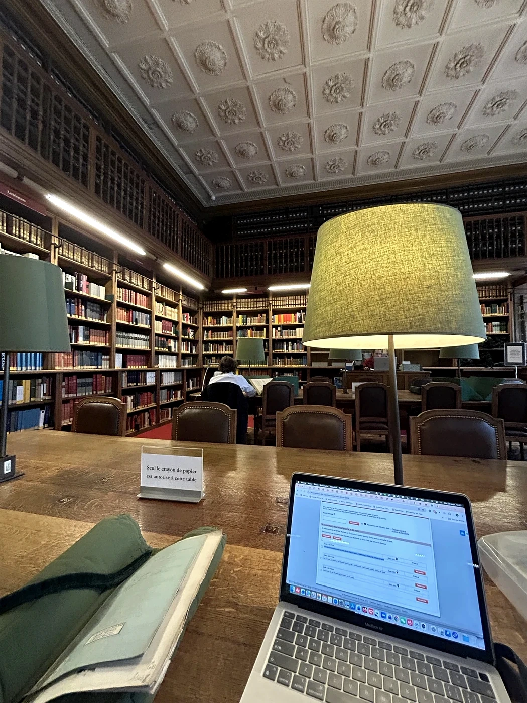
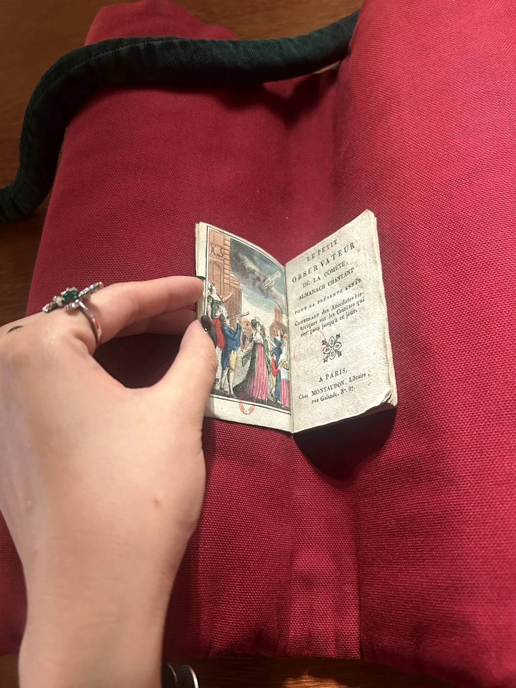
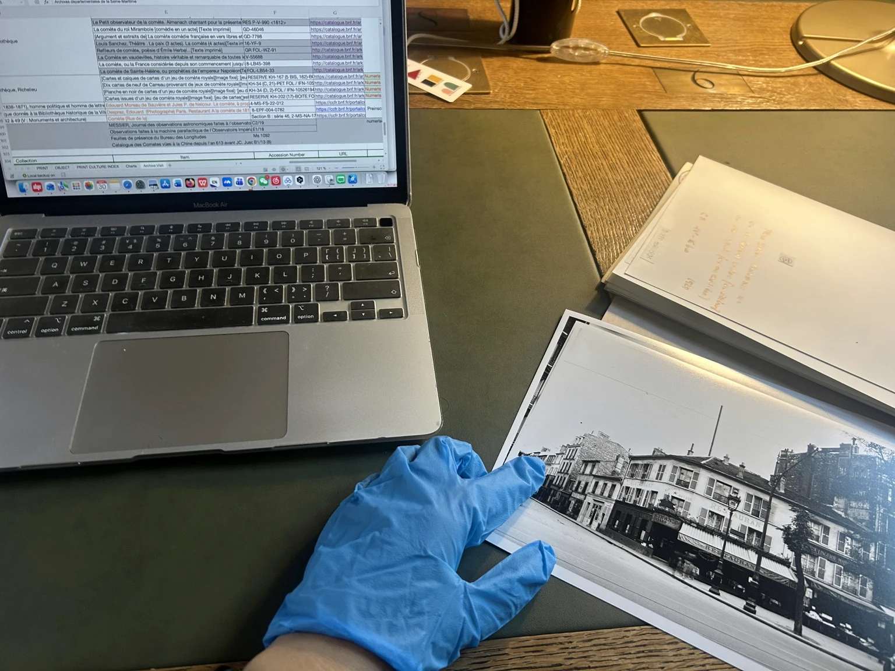
From a comet in 1811 to the wider geographies of knowing.
Taking the Great Comet of 1811 as a microhistorical lens, my doctoral research investigates how knowledge of the heavens was produced and transformed across observatories, newspapers, theatres, print shops, domestic spaces, and political culture in Napoleonic Europe.
Rather than treating astronomical knowledge as something simply disseminated from scientific institutions, the project follows the diverse people, media, and practices through which the comet became an object of scientific inquiry, commercial opportunity, cultural interpretation, and political imagination.
Explore the digital research →A developing comparative project on how geographically dispersed observations of extraordinary natural phenomena were connected, interpreted, and authorised across Europe, c. 1750–1870.
Exploring the 1914 solar eclipse as a window onto the entanglements of scientific exchange, state institutions, and international relations at the outbreak of war.
How do historical actors construct the contexts through which they understand—and intervene in—their own present? A striking microhistory begins on 20 July 1968, when the Living Theatre performed Antigone at the Festival d’Avignon, where the accumulated histories of Sophocles’ tragedy encountered the immediate political tensions of May ’68 and a dispute over theatrical censorship. The production drew on Brecht’s wartime adaptation and Judith Malina’s translation, while members of the Théâtre du Chêne Noir intervened in protest against the banning of Gérard Gelas’s La Paillasse aux seins nus.
Drawing on theatrical programmes, correspondence, administrative records, press coverage and ephemera, this project asks how historical actors themselves made and performed contexts. Rather than treating context as a fixed background reconstructed by the historian, it traces how successive translations, adaptations and performances attached earlier histories to the tragedy, making them available for political reuse. The concept of répétition captures the tension between the revolutionary aspiration to rupture and the persistent mobilisation of inherited narratives, gestures and memories.
Experiments in building a source corpus, reconstructing urban spaces, and comparing the geographical imagination of the press.
My doctoral research has generated a structured corpus of more than 1,200 primary-source entries, spanning manuscript correspondence, newspapers, periodicals, printed works, and visual and material sources. The principal collection window runs from March 1811 to the end of 1812, with additional contextual sources outside those dates. The sources range from scientific manuscripts, official documents, newspapers, periodicals, pamphlets, private correspondence and diaries to advertisements, trade cards, caricatures and engravings. Material evidence also includes scientific instruments, games, toys, jewellery and needlework. Together, these sources document the observation, calculation, interpretation, contestation and circulation of cometary knowledge across different social settings. Missing or uncertain information is retained as such. The corpus remains a work in progress; a public textual release is planned after completion of the PhD, subject to rights and source checks.
PREVIEW ONLY · FULL DATASET NOT YET PUBLIC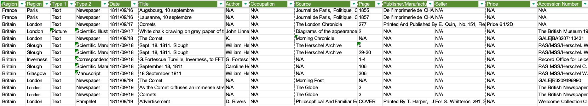
These maps locate the urban sites where cometary knowledge was observed, recorded, printed, sold, performed, and debated. The points refer to historically documented activities—not simply places where the comet was sighted. Select a city to explore illustrative microhistories.
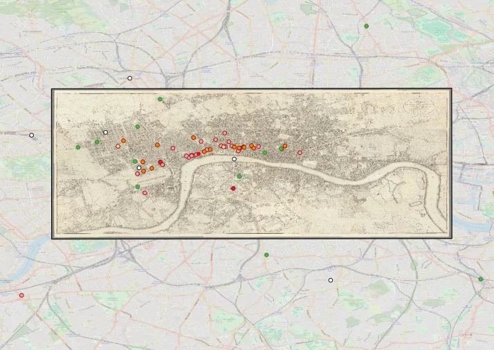
Markers are approximate visual annotations based on the original presentation, not newly georeferenced coordinates.
Newspaper correspondents Theatres Print sellers / instrument makers Places cited
Colour categories are summarised; consult the underlying research for full classifications.Each paper constructs a distinctive cartography of epistemic value: an uneven geography of places from which cometary knowledge was imagined to originate. Editorial selection, political orientation, censorship, and proprietors’ interests helped shape these distributions. Beyond specialist journals, formal scientific institutions often appear less prominent than commercial, domestic, and entertainment spaces: correspondents’ homes, theatres, lecture venues, booksellers, and makers or sellers of scientific instruments. The heatmaps show frequencies of place mentions, not actual densities of knowledge production; coverage and publication size vary.
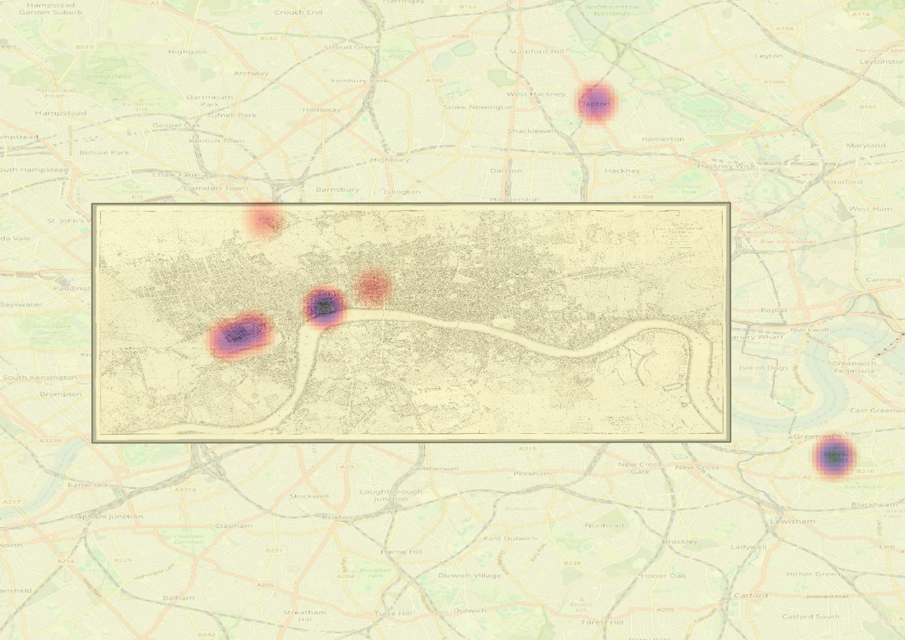
Selected publications, works in progress, and academic activities.
“From Gentleman’s Observatory to Women’s College: The Transnational Life of the Newnham Telescope.” Bulletin of the Scientific Instrument Society. Accepted, forthcoming.
Three articles currently under peer review at British Journal for the History of Science, French History, and Journal for Eighteenth-Century Studies, addressing metropolitan print and cometary knowledge, political culture in Napoleonic France, and British trade cards and representations of China. Manuscript titles and journal-to-topic pairings are withheld while review is ongoing.
“Répétition: Antigone and the Making of Revolutionary Context in Avignon, 1968.” In Context (Peter Lang, projected 2027).
Dominick LaCapra, History and Criticism (1985). Chinese translation by Deguang Li, Commercial Press (under contract; projected 2027).